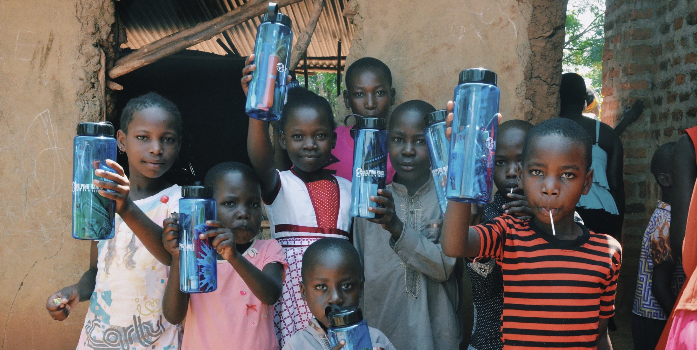

Research
Primary Research
Problem to Solve
Addressing the issue of global lack of accessibility to clean water.
Design Question
How can this website prompt people to partake in the mission?
Ultimate Impact
Improve accessibility to clean water for children in remote areas.
Possible Solutions
Concise information. Imagery. Explaining need. Showing impact.
Content and Constraints
Possible lack of imagery. Presenting options for filling water bottles.
Design Question Reimagined
Compelling individuals to partake in meeting the practical needs of remote communities.